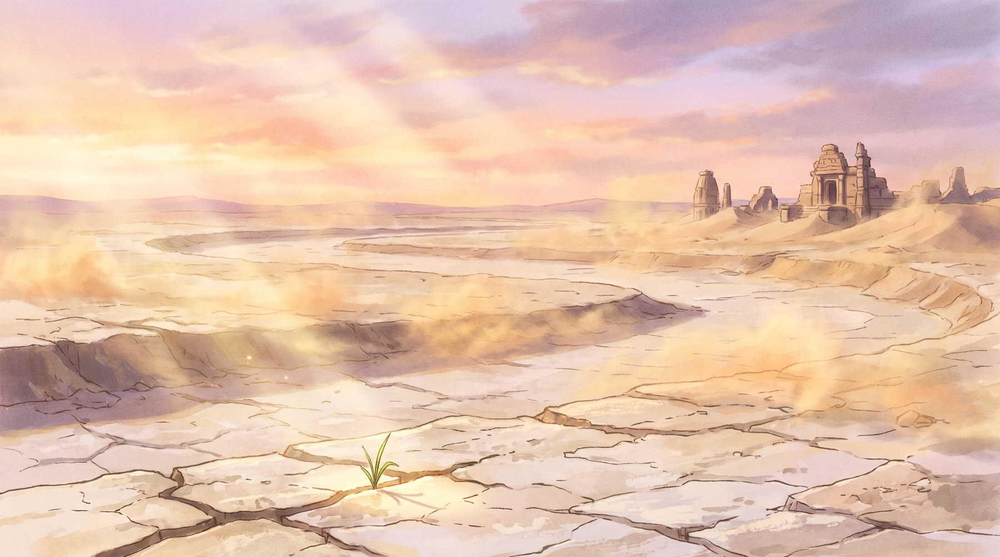
PROLOGUE — the dried Saraswati. "Long ago, a river sang here."
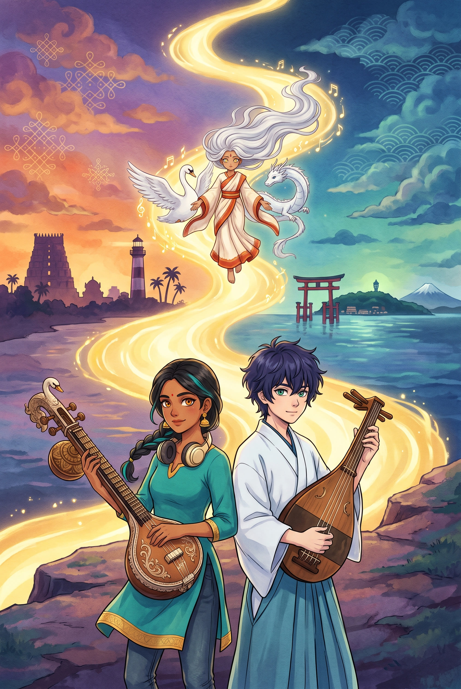
Meera Iyer, seventeen, was Chennai's brightest young veena prodigy — until her grandmother-guru died mid-lesson, and the music stopped with her. Now she edits lo-fi beats at 2 a.m., built around one secret sample: her grandmother's last recording.
Six thousand kilometres away, on the island of Enoshima, Kaito Amamiya practises the biwa only because someone must — he is the reluctant heir to a tiny shrine of Benzaiten, and what he truly loves is field recording: the sound of places no one listens to.
One night his recording of the shrine at dawn meets her grandmother's veena inside a 2 a.m. mix — and the two sounds resonate. In both countries at once, a goddess wakes: Saras — Saraswati to Meera, Benzaiten to Kaito — the goddess of music, rivers and knowledge who crossed the sea with the sutras 1,300 years ago, and who has been fading ever since the world stopped listening.
Worse — something has been feeding on the forgetting. Mauna, the Silence, is swallowing sound itself: a drumbeat here, a temple bell there. Saras will be next.
A girl who won't play, a boy who never wanted to, and a goddess who is forgetting her own name have one spring to compose the Bridge Raga — a single melody built from the notes their two musics share — and perform it where her invisible river once flowed. They cannot even speak each other's language. But music doesn't ask.
On Vasant Panchami, at the meeting of three rivers, they will teach the silence to listen.
Every Japanese child knows Benzaiten, goddess of music and water, enshrined on islands like Enoshima. Few remember she is Saraswati, who crossed from India with the sutras and the lutes. She is not the only traveller:
| India | Japan | |
|---|---|---|
| Saraswati सरस्वती | → | Benzaiten 弁財天 |
| Lakshmi लक्ष्मी | → | Kichijōten 吉祥天 |
| Ganesha गणेश | → | Kangiten 歓喜天 |
| Yama यम | → | Enma 閻魔 |
| Brahma ब्रह्मा | → | Bonten 梵天 |
Our premise simply takes this literally: the goddess has lived stretched between two shores for thirteen centuries. In India her river — the Saraswati — vanished millennia ago; myth says it still flows unseen, joining the Ganga and Yamuna at Triveni Sangam. In Japan her islands still ring with bells. A goddess split between a river no one can see and bells no one hears.
Even the villain is bilingual by accident of history: silence is mauna (मौन) in Sanskrit and muon (無音) in Japanese. Two cultures, one enemy, almost one word.
Her iconography carries the film's music: Saraswati holds the veena; Benzaiten holds the biwa. Two lutes, one goddess — a duet waiting 1,300 years to be played. And both musical worlds meet on pentatonic ground: raga Hamsadhvani ("the swan's cry" — the swan is her mount) on the Indian shore, the miyako-bushi scale on the Japanese shore.
Cross-culture is not this film's costume. It is the premise, the villain, the music, and the ending.
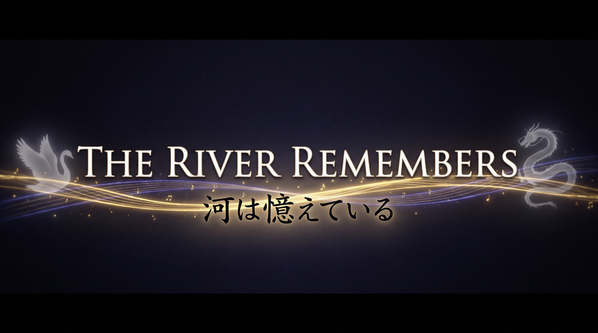
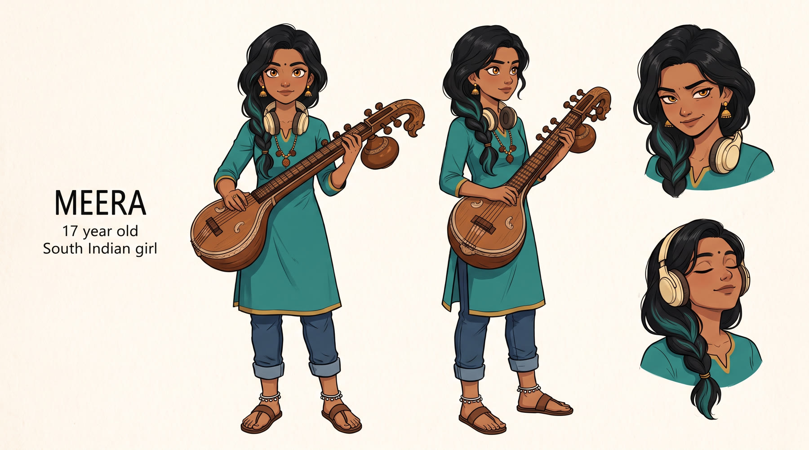
A Carnatic prodigy who stopped playing the day her grandmother-guru died mid-lesson. Grief made her precise and sarcastic; music became something she edits instead of something she plays. Her 2 a.m. lo-fi tracks are secretly built on one sample — her grandmother's last recording — looped so it never has to end.
Arc. From editing the past to playing the present: Meera's journey is learning that a tradition is not a recording to preserve but a river to step into. The film's emotional climax is not the goddess's rescue — it is Meera improvising, live, past the point where her grandmother's lesson was cut short.
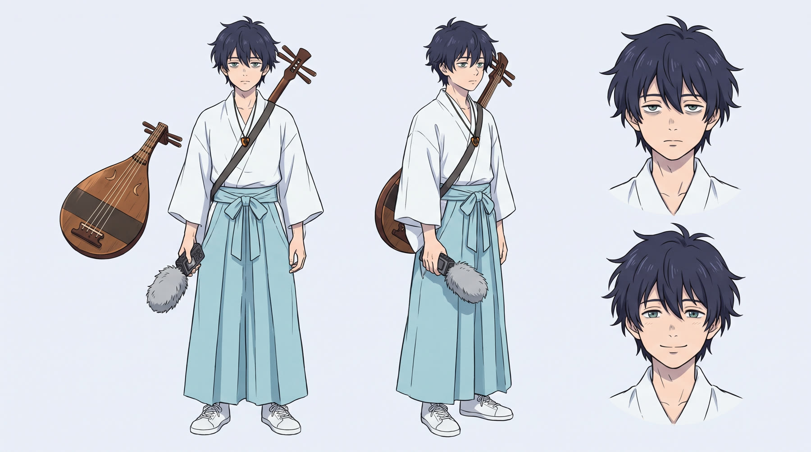
Heir to a tiny Benzaiten shrine, Kaito practises the biwa the way you take out the rubbish: dutifully, on Tuesdays. His real devotion is field recording — he believes places have voices, and his archive has names like "#47: the vending machine that hums in E." One dawn he uploads the sound of the shrine before anyone wakes. Meera finds it.
Arc. From performing duty to meaning it: Kaito wants to leave for a sound-engineering school in Tokyo, and the film lets that wish stay true — what changes is that he finally hears what his family has been keeping alive. The boy who archives sounds becomes the first person in decades to give the goddess a new one.
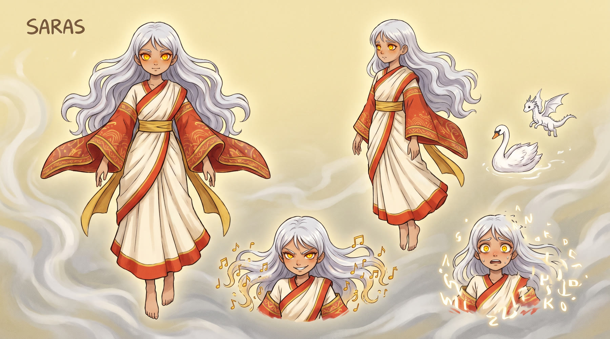
Imperious, funny, secretly terrified. She remembers the veena's fingering but not her mother-river's name; she speaks in a tumble of Tamil, Japanese and Sanskrit and acts as the leads' translator — when she is strong enough. She strengthens only when her two shores sound together. A neighbourhood child's strawberry-candy offering makes her cry.
MAUNA (मौन / 無音) — the Silence. Not a villain: an accumulation. Every unplayed record, every language dying, every lesson cut short, pooled into an elegant faceless figure whose face is a single white disc — a whole rest, waiting. It cannot be destroyed, only answered: the final chord of the film includes its rests. In the last shot, it is sitting in the audience.
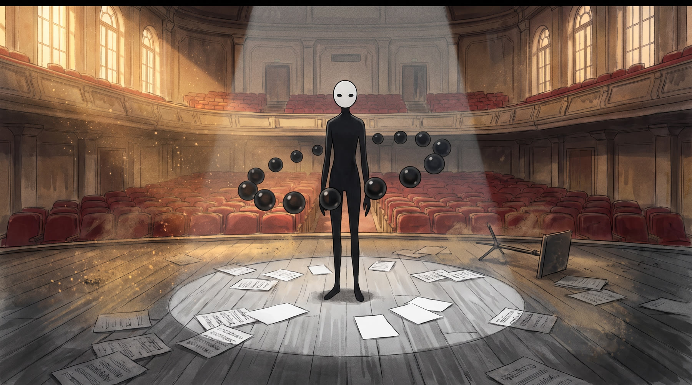
A dried riverbed in Rajasthan; wind where a river sang. Chennai: Meera's 2 a.m. mixes. Enoshima: Kaito's dawn recording. The sounds meet in her headphones and resonate — and a goddess wakes in both places at once, flickering like a signal split between two receivers. She conscripts them, cackling and translating: "You made me remember my hands. Now help me remember the rest."
Saras strengthens only when her two shores sound together — so they practise across time zones, phone propped on a water tank, a shrine bell as a metronome. Meera must play (not edit); Kaito must mean it (not perform). Meanwhile the Silence spreads: a Chennai kutcheri goes mute mid-beat; a Kamakura festival stops ringing. An India–Japan friendship festival brings Meera's school ensemble to Enoshima — the meeting is a comedy of bows and namastes with no shared language. On the shrine steps, their first true duet makes Saras solid enough to touch. Then Mauna swallows the festival's sound entirely — and Saras with it, mid-laugh.
The only place thin enough to reach her: Triveni Sangam, where the invisible river joins the visible two — on Vasant Panchami, Saraswati's own festival day. On the confluence at dusk, veena and biwa play the Bridge Raga into absolute silence: the film's sound drops to nothing, and we watch two teenagers play what we cannot hear. The turn is not defeating silence but including it — the rests become part of the music, Mauna takes its seat as the audience it always was, and the invisible river ignites with light. Saras returns — not as she was, but as what they made: one goddess, two names, one song.
Neither of them speaks the other's language yet. They don't need to. Over the credits: the "Two Shores" arrangement — her beats, his field recordings, both lutes.

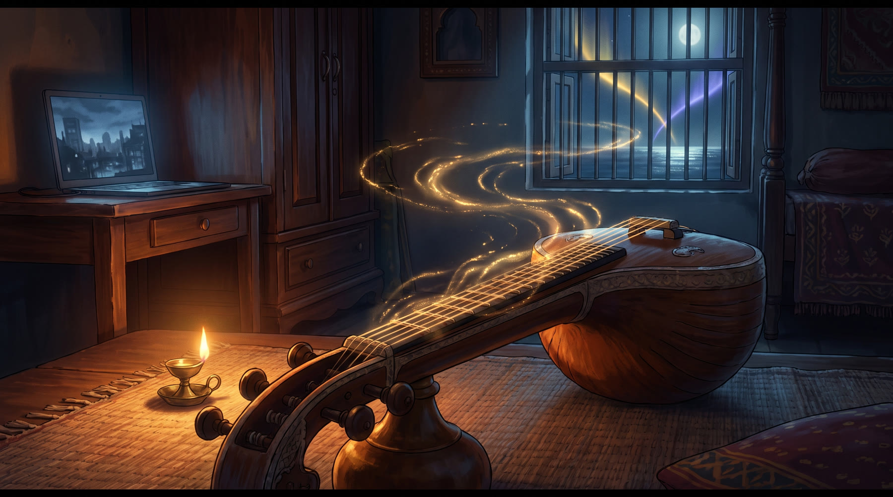
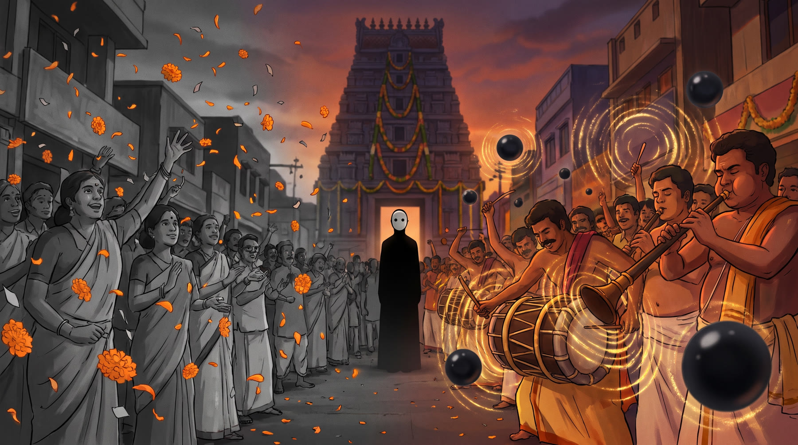
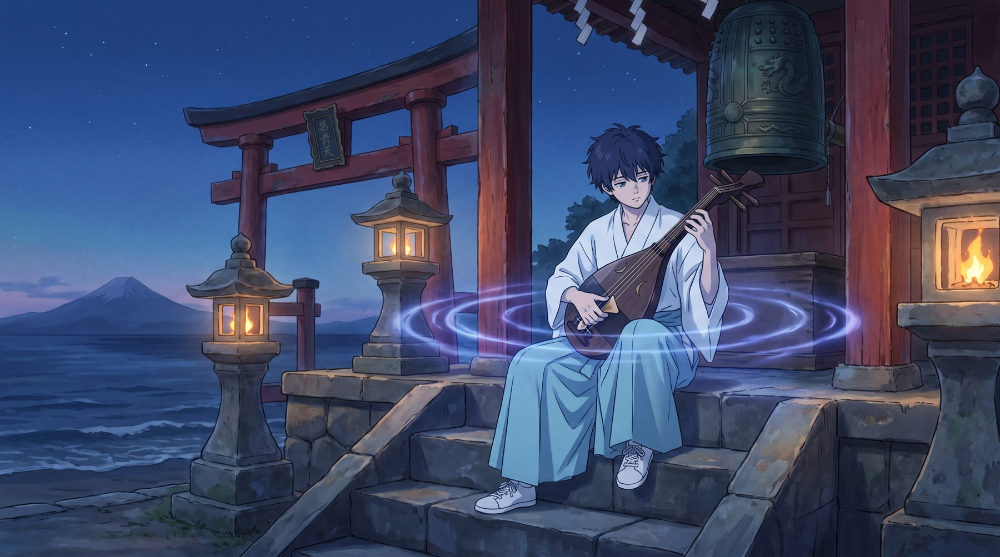

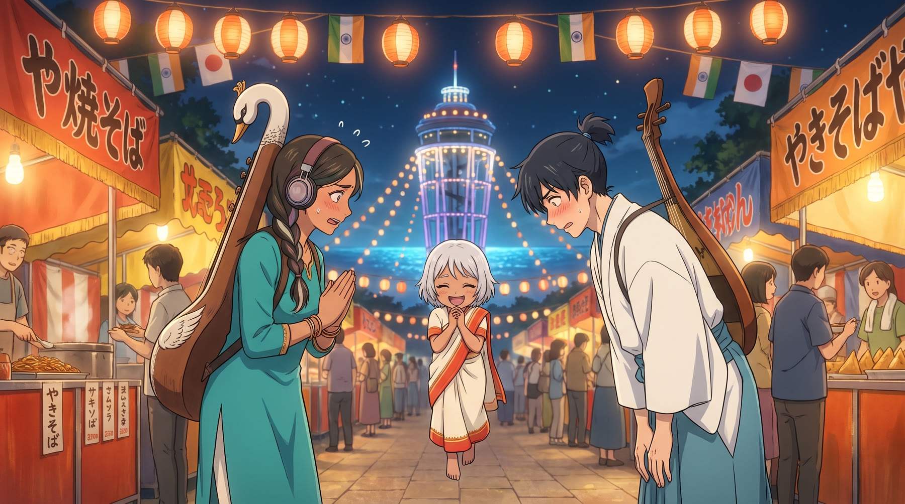
The Bridge Raga. The Indian shore sings raga Hamsadhvani — "the cry of the swan", the swan being Saraswati's own mount. The Japanese shore answers in the miyako-bushi scale of koto strings and biwa songs. Both are pentatonic; the score builds its central melody from the tonic and fifth the two scales share, then teaches each side to borrow the other's colours — the film's thesis in musical form. The duet the entire story tunes toward is veena × biwa: two descendants of one iconography, separated for thirteen centuries.
Three layers.
The set pieces. A time-zone practice montage cut to a shared metronome; the shrine-steps first duet where Saras becomes touchable; the festival massacre where a full matsuri is muted in four seconds; and a finale performed into absolute silence — the theatre itself goes quiet with the characters, and the music returns note by note, rests included.
Model. A Carnatic-fusion palette in the spirit of India's great film composers meeting the intimate electronic scoring tradition of modern Japanese animation — one score, commissioned as a genuine India–Japan collaboration, with songs recorded in Tamil, Japanese and Sanskrit.
India in warmth, Japan in coolness — and the goddess in the gold both share. Chennai plays in turmeric, vermilion and sea-green with kolam geometry in its light; Enoshima in indigo, asagi and moon silver with seigaiha waves in its clouds. Sound is visible: music moves through both worlds as ink-in-water ripples — gold for the veena, indigo for the biwa — so that when the two colours braid, the audience sees the duet. Mauna is the absence of all of it: desaturation, stillness, one white disc.
Craft lineage. Direction that trusts small gestures and diegetic sound, in the lineage of Naoko Yamada; painted skies and light that make geography romantic, in the lineage of Makoto Shinkai; musical sequences that melt realism when the raga takes over, in the lineage of Masaaki Yuasa. Hand-drawn 2D characters over painterly watercolour-gouache backgrounds; effects animation (ripples, river-light, pearls) as traditional 2D with digital compositing.
Why anime. Only animation can show sound as a living thing, age a goddess between frames, and hold a 40-second silent close-up of two teenagers playing instruments we cannot hear — and make it the loudest moment of the year.
Series potential. The deity table on page 3 is a map: every migrated god is an episode. The River Remembers opens a two-country mythology with room for a 12-episode expansion (working title: The Gods Who Crossed the Sea).
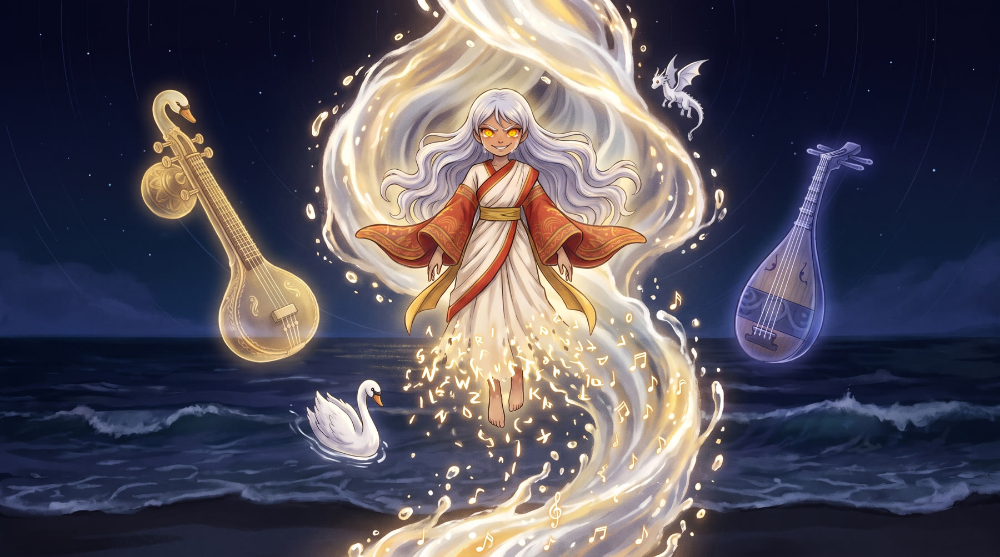
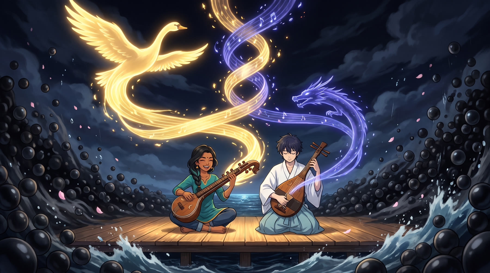
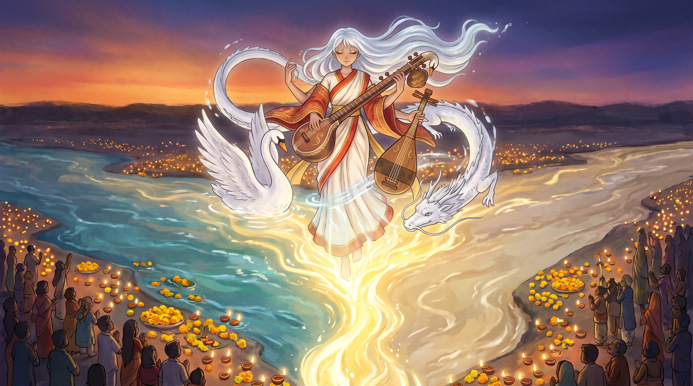
Accompanying video. A ≈2-minute concept teaser (16:9, 1080p, stereo, English narration
with Japanese and English subtitles) accompanies this proposal, visualizing nine key shots of
the film, narrated by Saras. All visuals are AI-assisted concept art produced for this
submission.
Rights & respect. All characters, story, designs and artwork are original to
this proposal. Mythological figures and traditional musical forms are public cultural
heritage, treated with research and respect; the production plan includes Indian and Japanese
cultural and religious consultants at every stage. No third-party footage, music, or IP is
used.